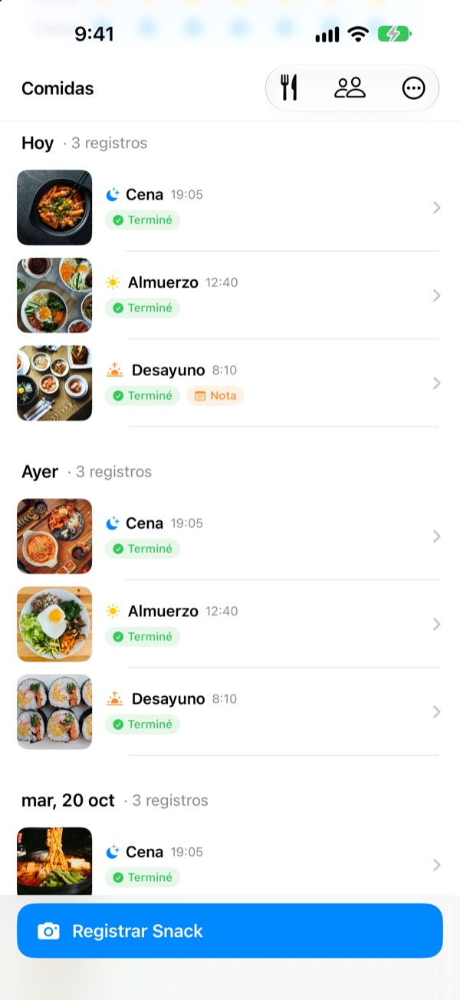
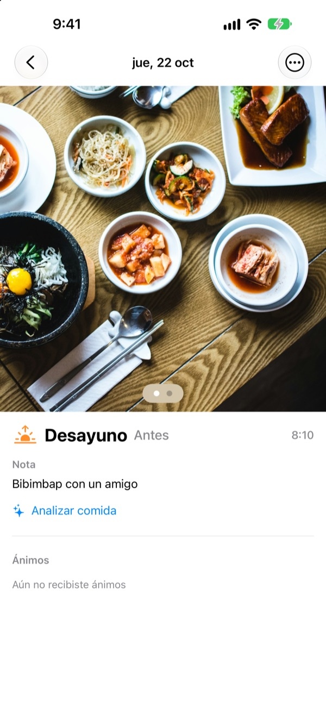
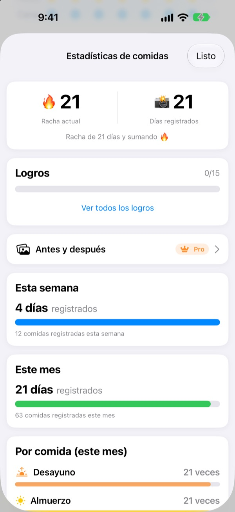
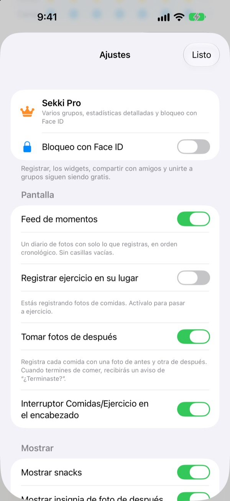

Una foto antes de comer.
Y ya está registrado.
Sekki mira la hora de la foto y la guarda como desayuno, almuerzo, cena o snack. Registra solo una comida al día y tu racha sigue.
El registro, las estadísticas, los widgets y compartir con amigos son gratis.

Pruébalo tú
Elige una hora y toca el botón de registrar. Igual que en la app, el botón ya indica la comida que toca a esa hora.
¿Dejaste un diario de comidas a los tres días?
Te saltas un desayuno, olvidas una cena, y las casillas vacías empiezan a molestar hasta que borras la app. Sekki no tiene casillas vacías. Solo se acumulan en orden las comidas que registras, y con una foto el día ya cuenta.
Haz la foto y la comida se ordena sola
Según la hora de la foto, Sekki la guarda como desayuno, almuerzo, cena o snack. Añade fotos de antes y después, registra sin foto o escribe una nota.
Reconoce la comida en tu dispositivo, gratis, y tus fotos nunca salen del teléfono.

Un registro que nunca disminuye
Una comida al día mantiene la racha, y el total de días registrados nunca baja. Las estadísticas semanales y mensuales muestran cuántos días y comidas registraste, no un porcentaje de cumplimiento.
Por el camino vas sumando logros como Racha de 7 días o Madrugador.

Solo las comidas que eliges, sin abrir la app
Elige de qué comidas quieres recordatorios y ajusta los horarios a tu día. Haz la foto de antes y podrás marcar Terminé directamente desde la notificación.
Registra también con el botón de acción, Siri, Atajos o un widget, y añade amigos con un código para animaros con emojis y comentarios.

Empieza en tres pasos
- 1
Elige tus comidas
La primera vez, Sekki te pregunta qué comidas recordarte. Puedes cambiarlo en Ajustes.
- 2
Foto antes de comer
El botón de registrar ya muestra la comida de esa hora. Tócalo, haz la foto y listo.
- 3
Al terminar, un toque
Pulsa Terminé en la notificación o en el widget, o añade una foto de después.
Registrar sin abrir la app
- Notificación
- Tras la foto de antes, marca Terminé desde el aviso
- Widget de inicio
- Mira cuántas comidas llevas hoy y la que estás comiendo, y toca Terminé
- Widgets de pantalla bloqueada
- Rectangular, circular y en línea
- Botón de acción · Siri · Atajos
- Marca Terminé con un botón o una frase
- Guardar en Fotos
- Actívalo en Ajustes para tener álbumes de Sekki separados para comidas y ejercicio
- Modo ejercicio
- El ejercicio se guarda aparte de las comidas, con las sesiones del mes de un vistazo
El botón Terminé del widget requiere iOS 17 o posterior.
Registrar es gratis. Sekki Pro va más allá.
Gratis
- Registro con fotos y clasificación automática, fotos de antes y después, notas
- Rachas, total de días, estadísticas semanales y mensuales, logros
- Recordatorios de las comidas que eliges y Terminé sin abrir la app
- Widgets, botón de acción, Siri y Atajos
- Compartir comidas y ejercicio con amigos, ánimos con emojis y comentarios
- Crear un grupo y unirte a todos los que quieras
- Análisis de comida en el dispositivo
Sekki Pro
- Varios grupos: familia, trabajo, compañeros de gimnasio
- Comparar comidas de hace unas semanas con las de hoy
- Ver las comidas que más repites
- Bloquear la app con Face ID o Touch ID
Suscripción anual o mensual, o compra única de por vida
La suscripción se renueva automáticamente salvo que la canceles al menos 24 horas antes de que termine el periodo. Cancélala cuando quieras en Ajustes > Cuenta de Apple > Suscripciones. Condiciones del servicio: m1zz.github.io/RoutineCamera/es/terms.html
Preguntas frecuentes
¿Dónde se guardan mis fotos?
En tu dispositivo. Si activas Guardar en Fotos automáticamente en Ajustes, también se guardan en los álbumes de Sekki en Fotos. Mientras Compartir mis comidas esté activado (lo está al principio), se suben a iCloud para que las vean los amigos que añadas. Puedes desactivarlo en Ajustes > Cuenta y uso compartido.
¿Cómo añado amigos?
En la pantalla Amigos, comparte tu código de seis caracteres e introduce el de tu amigo. También puedes pegar varios códigos a la vez separados por comas.
¿Cómo animo a un amigo?
Abre una comida de tu amigo y deja un emoji o un comentario breve. Si aún no ha registrado una comida, toca la casilla vacía para darle un toque.
¿Pierdo la racha si me salto una comida?
No. Si ese día registras cualquier comida, snacks incluidos, la racha sigue. Aunque te saltes un día entero, el total de días registrados no baja.
No me llegan las notificaciones.
Comprueba que las notificaciones de Sekki estén permitidas en Ajustes de iOS > Notificaciones y que el dispositivo tenga sesión iniciada en iCloud. Las horas de los recordatorios se cambian en los ajustes de la app.
¿El análisis de comida envía mis fotos a un servidor?
No. Se hace en tu dispositivo, así que las fotos nunca salen del teléfono. Es gratis y sin límite.
¿Cómo elimino mi cuenta y mis datos?
Ve a Amigos > Cuenta > Eliminar cuenta. Se borran la cuenta y los datos de comidas guardados en el servidor, y no se pueden recuperar. Si algo falla, escríbenos.
¿Cómo cancelo la suscripción?
En Ajustes > Cuenta de Apple > Suscripciones. Se renueva automáticamente salvo que la canceles al menos 24 horas antes de que termine el periodo. La compra de por vida se paga una sola vez.
Errores, ideas o dudas sobre tu cuenta: escribe a leeo@kakao.com o manda un DM a @lee25_ios en Instagram. Solemos responder en uno o dos días.